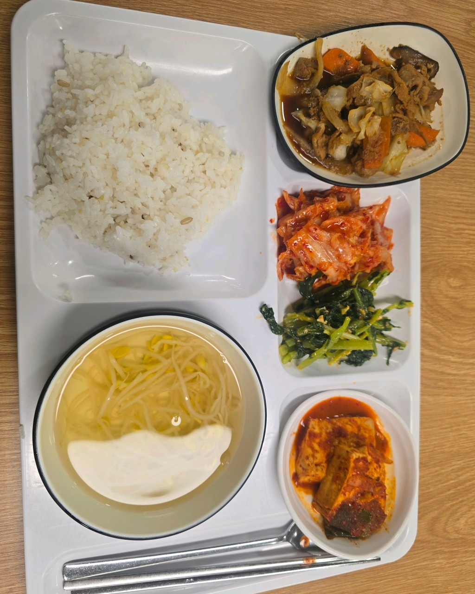

이 장소가 의미 있는 이유
- 매일 달라지는 메뉴로 지루함이 없이 먹을 수 있음
- 그리고 1층과 2층에 따로 운영해서 원하지 않는 메뉴가 있으면 다른 것을 고를 수도 있음
찾아가는 방법
학생미래인재관 1층 gs편의점 옆에 하나가 있고 동일한 위치에 2층에서도 있음
여기에서 해볼 것
- 1층에서는 음료나 디저트도 나오기에 먹어보기
- 2층에서 먹을 경우 부족하다면 플러스메뉴도 시켜서 먹어보기
출처
사진:네이버 방문자 리뷰
다양한 메뉴가 있어서 내가 먹고 싶은 음식을 정할 수 있는 자유

학생미래인재관 1층 gs편의점 옆에 하나가 있고 동일한 위치에 2층에서도 있음
사진:네이버 방문자 리뷰